前陣子在網路上看到一個很酷的開源專案
充分的使用榨乾 GitHub
- 每隔一段時間用 GitHub Actions 看網站有沒有掛掉
- 若掛掉就用 GitHub Issues 回報異常事件
- 使用 GitHub Pages 產生服務狀態的頁面
Actions 簡介
Actions 是 GitHub 上的一個自動化服務
你可以把腳本放到上面
當特定事件發生時，自動執行你的腳本
以 Upptime 來說
預設是每隔五分鐘來你的網站一次
同時也會記錄每次的 response time
讓你在頁面上看歷史紀錄等等
這些動作都寫在 Actions 的腳本中
機器都會自己執行
完全不用動到一根指頭
目前 Actions 支援 Windows, macOS, Linux 三種環境
然後 額度 的話，如果是免費個人帳戶
- 在 Linux 上，一個月有 2000 分鐘的執行時間
- 在 Windows 上，用 1 分鐘會消耗 2 分鐘的額度 (Linux 的兩倍)
- 在 macOS 上，用 1 分鐘會消耗 10 分鐘的額度 (Linux 的十倍)
當然你也可以用 自己的機器 跑
不過！
如果你的 Repo 設為公開的話
就可以免費使用 Actions
既然用免費的，就要有某天要付錢的覺悟
大概介紹完之後
就來開始裝 Upptime 吧
創建 GitHub Repo
- 進入 Upptime 的 repo
- 點擊
Use this template
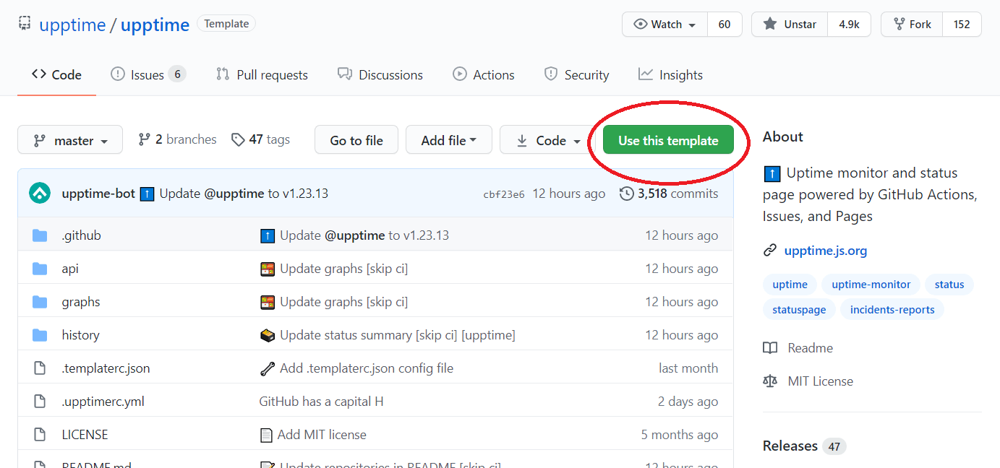
- 創建 repo
- 輸入 repo name
- 選擇要不要公開 repo
- 勾選
Include all branches - 點擊
Create repository from temple
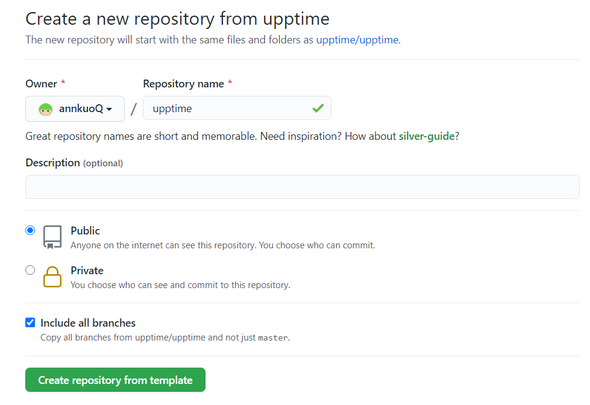
等一陣子後
就會複製一樣的 repo 到你的帳號下
設定 GitHub Pages
- 到你的 repo，點擊
Settings
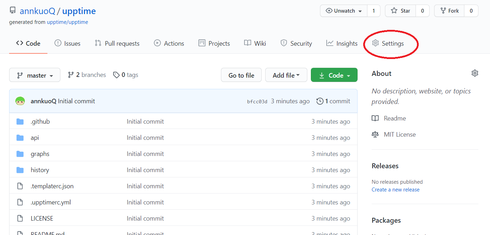
- 往下捲到 GitHub Pages 的 Source
- Branch 設為
gh-pages - 點擊
Save
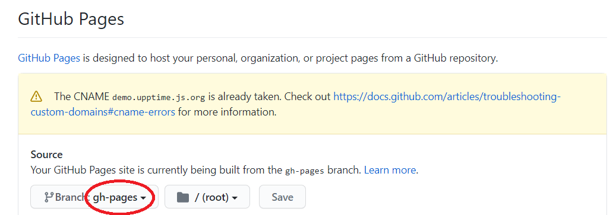
設定 Repository Secret
為了讓 Upptime 有 commit 和 publish 網頁的權限
需要設定 Personal Access Token
- 點擊自己的 Profile picture >
Settings
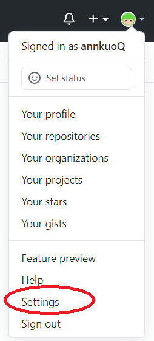
- 點擊左側的
Developer settings>Personal access tokens>Generate new token
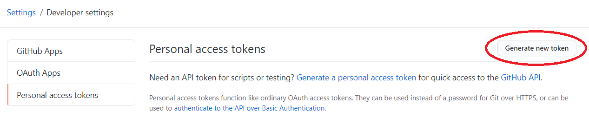
- 新增 token
- Note:
upptime - Select scopes: 勾選
repo和workflow - 點擊
Generate token
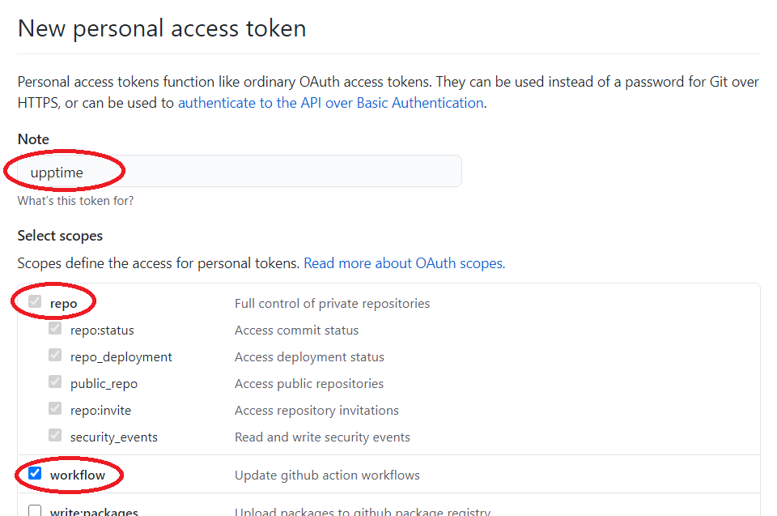
- 複製這段很長的 token
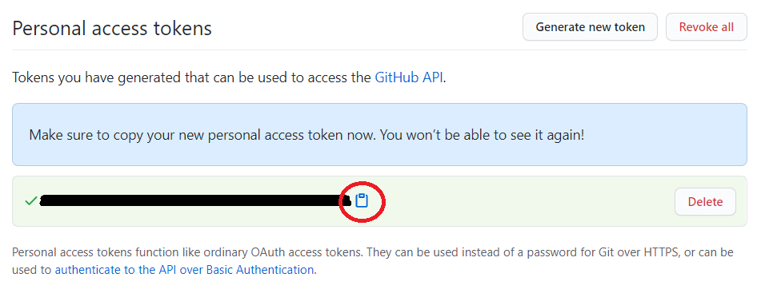
- 返回 repo >
Settings
點擊左側Secrets>Add a new secret>New repository secret
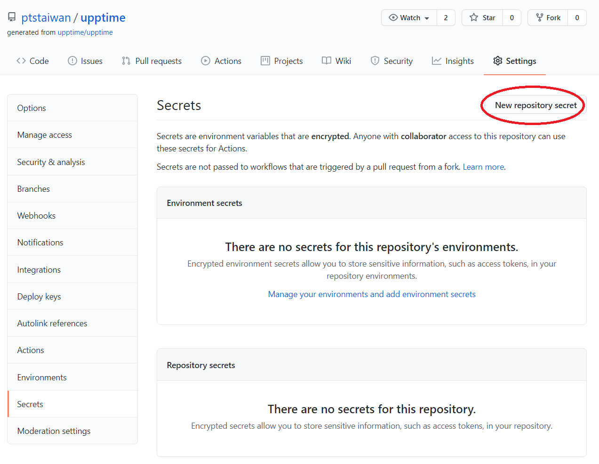
- 設定 repo 的 token
- Name:
GH_PAT - Value: 貼上剛剛複製的
token - 點擊
Add secret
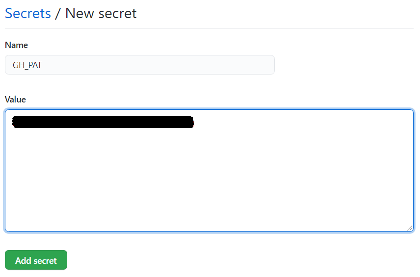
Personal Access Token 只能建立在個人帳戶底下
所以你若把 upptime repo 建在組織底下
之後綁 token 的人離職的話…
更新 YAML 檔
Upptime 使用 .yml 來做 “集中式設定”
只要更改這個檔案的設定
所有相關程式碼就會連動修改
- 到你的 repo，點擊
Code>.upptimerc.yml
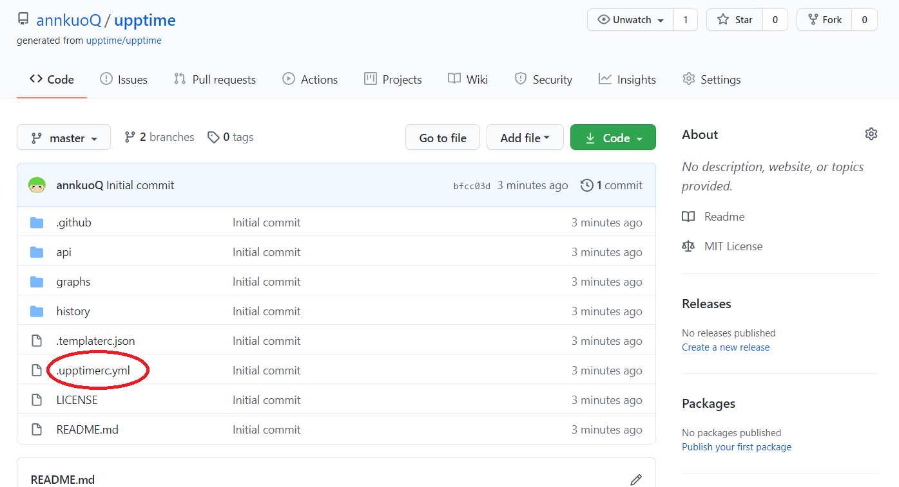
- 點擊鉛筆編輯檔案
- 以下是我修改的地方
|
|
- 點擊
Commit changes
查看 GitHub Actions
設定好 .yml 後
Actions 就會自動開始跑 (黃圈圈在轉)
跑成功會顯示綠色的勾勾
跑失敗會顯示紅色的叉叉
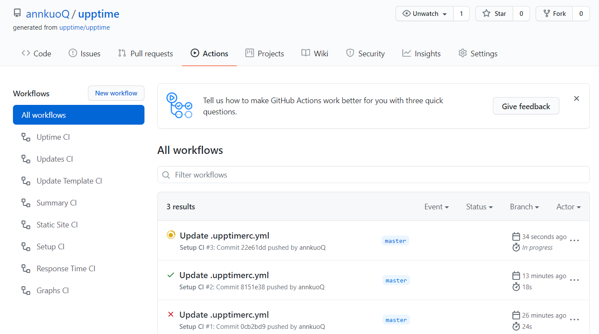
如果發現 Actions 沒跑
或是想要讓它馬上執行
就點擊左側的 Setup CI > Run workflow > Run workflow
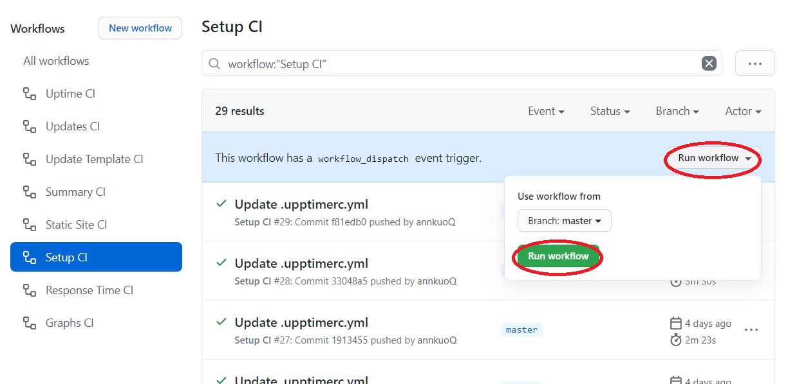
查看 Status Website
你的狀態頁面 URL 是: https://<user_name>.github.io/<repo_name>/
或是可以到 repo > Settings > GitHub Pages 查 URL
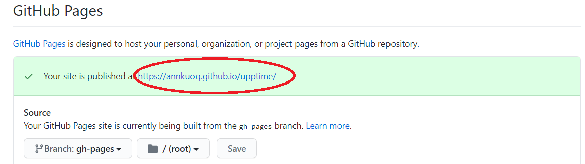
點擊 URL 後，我們來到了狀態頁面
頁面分成三個區塊
- Active Incidents 顯示目前的異常事件
- Past Incidents 顯示過去的異常事件
- Live Status 可以切換五種 response time 圖形
- 總平均
- 近一天
- 近七天
- 近一個月
- 近一年
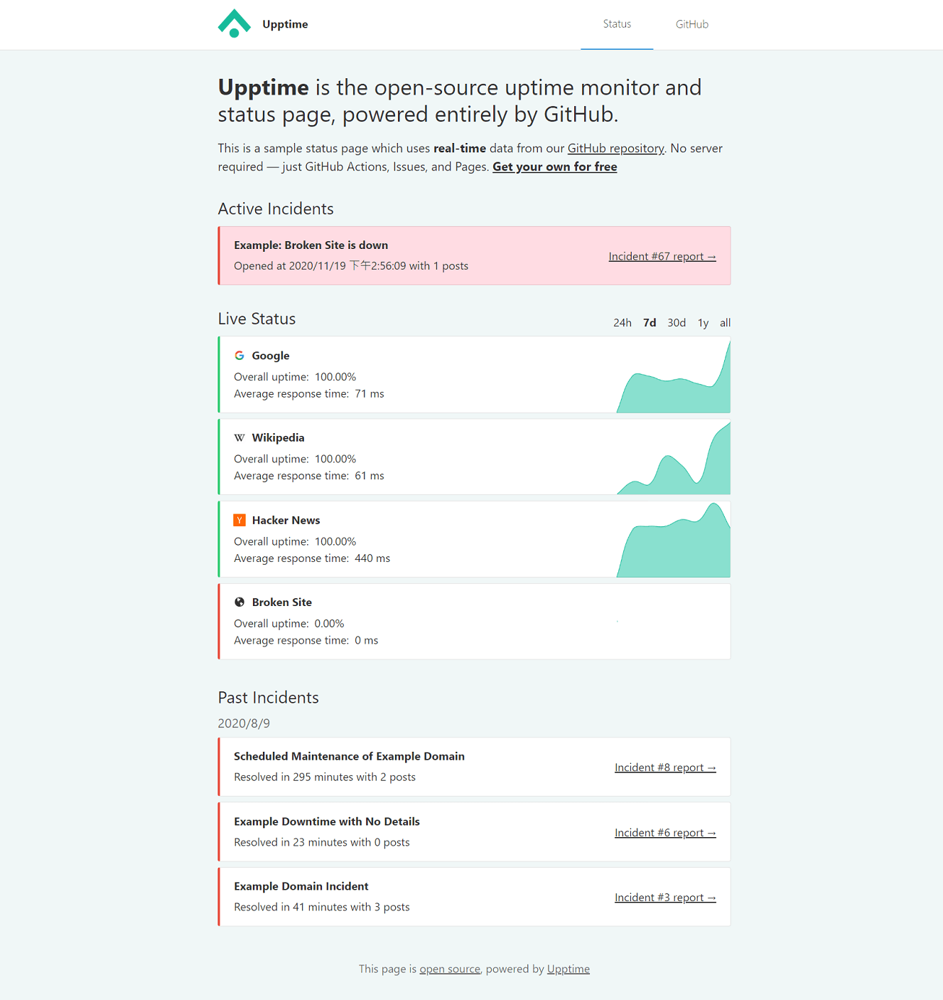
進階設定
自訂 Workflows
Upptime 有七個 Workflows
只要把下面這段貼到 .upptimerc.yml
就可以自訂排程的時間點
|
|
排程的語法是使用 Crontab
例如 uptime: "*/5 * * * *"
代表每五分鐘檢查一次網站
你可以改成 "0 * * * *" 變每小時執行一次
若還想了解其他的 workflows 可以參考 這份文件
i18n
Status Website 預設是英文的
如果你想要改成其他語言
可以把要修改的部分貼到 .upptimerc.yml
例如
|
|
若想知道還有哪些字串提供 i18n
可以參考 這份文件
後記
HTTP code: 0 !?
有時候會收到某些網站的 down 通知
不過實際去看網站又沒掛
issue 上面是寫:
- HTTP code: 0
- Response time: 0 ms
HTTP code 根本沒有 0 這種東西吧
在連到我的網站前就發生錯誤了
猜測是網路發生了什麼問題
Actions 不準時 !?
雖然設定每五分鐘檢查一次網站
但實際上有時候是二十分、四十分、甚至一小時
猜測可能是因為我是免費帳戶
優先權比較低